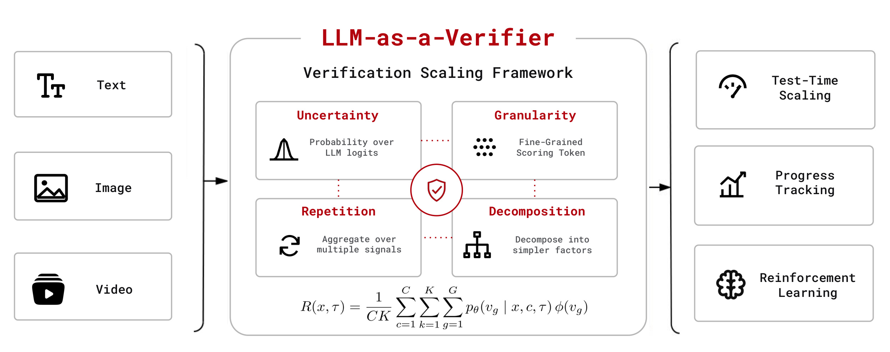
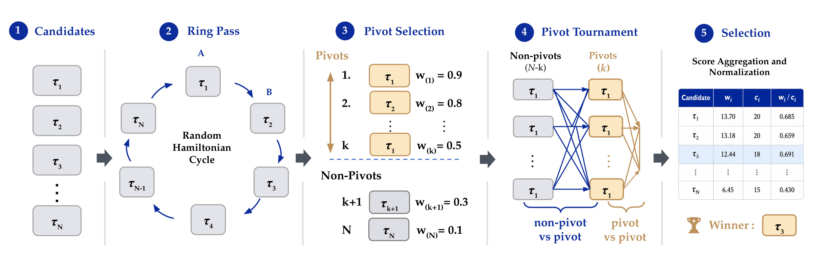
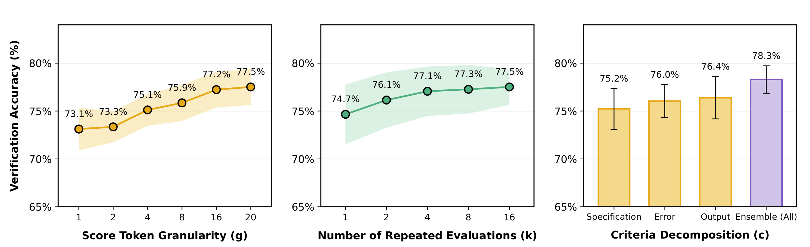
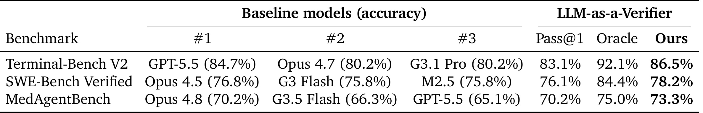
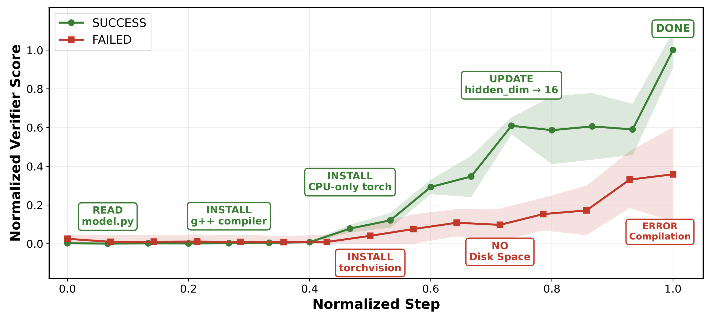
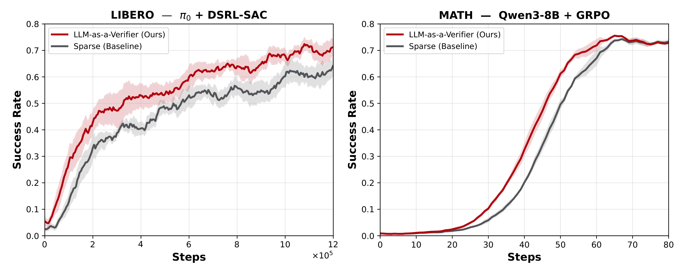

LLM-as-a-Verifier: A General-Purpose Verification Framework
- 论文： arXiv:2607.05391
- 作者：Jacky Kwok, Shulu Li, Pranav Atreya, Yuejiang Liu, Yixing Jiang, Chelsea Finn, Marco Pavone, Ion Stoica, Azalia Mirhoseini
- 机构：Stanford University, UC Berkeley, NVIDIA Research
- 项目页： llm-as-a-verifier.com
- 代码： github.com/llm-as-a-verifier/llm-as-a-verifier
1. 背景和问题
验证还没有像生成那样获得系统性扩展：标准 LM judge 会把评分分布压成粗离散标签，复杂轨迹之间容易并列，训练式 reward model 又受数据域限制，导致 agentic 任务中的正确性判断、进度监控和反馈学习缺少可迁移的细粒度信号。
这篇论文的出发点不是再提出一个更会写评语的 judge，而是把 verification 明确提升为大模型能力扩展的一个独立轴。作者观察到，过去几年大模型能力提升主要来自预训练规模、后训练优化和 test-time compute，但这些轴更多服务于生成本身。对 agent 来说，生成多个候选轨迹并不难，困难在于如何判断哪个轨迹真的完成了任务。Terminal-Bench 这类长程 shell 环境尤其典型：候选答案可能完成了文件编辑、运行了部分测试、打印了看似合理的日志，却在隐藏检查或最终状态上失败。如果 verifier 只能输出一个离散分数，许多质量差异会被压到同一个标签里，系统无法利用候选池里的真实 headroom。
论文在引言中用 oracle Pass@K 强调这个 headroom：如果有一个总能从多个候选轨迹里选出正确解的 oracle verifier，Terminal-Bench V2 上随着采样轨迹增加，成功率可以接近 98.9%。这说明生成器并非完全不会做题，很多任务至少有一个候选已经走对了；问题是现有 judge 不能稳定把那个候选挑出来。这里的“验证”比最终判分更宽：它既包括两个候选轨迹之间的排序，也包括对一个长程执行过程的进展估计，还包括把细粒度反馈变成 RL 训练中的 dense reward。作者因此把 verifier 当成一个可扩展组件，而不是一个附在评测脚本末尾的人工评分替代品。
传统 LM judge 的主要限制来自两层压缩。第一层是语言空间压缩：模型内部对 1、2、3、4、5 这类评分 token 有一个概率分布，但常见做法只取最大概率 token，于是“略好”和“明显好”可能都变成同一个 4 分。第二层是单次判断压缩：一个长程轨迹可能包含规格理解、工具调用、测试验证、错误恢复等多个方面，如果只用一个整体 criterion，prompt 偏差和偶然噪声会被直接写进最终分数。训练 reward model 可以绕开一部分问题，但它要求标注数据，并且跨 coding、robotics、medical 这些场景泛化并不自然。
所以 LLM-as-a-Verifier 的核心问题可以表述为：在不额外训练 reward model 的前提下，能否把已有 LLM 的 token probability 变成连续、可重复、可分解、可用于排序和学习的 verifier 信号？这篇论文的答案是肯定的。它提出的不是单一 prompt 技巧，而是一套 verification scaling 框架：用 scoring-token logits 的期望取代离散 token，用多个 granularity、重复采样和 criteria decomposition 降低方差与偏差，再用 Probabilistic Pivot Tournament 在有限预算下选择最佳候选。读这篇论文时，最重要的是抓住“把 judge 变成 verifier”这一变化：judge 给结论，verifier 要保留不确定性、比较关系和可聚合信号。
还有一个容易被忽略的背景，是 agentic 任务的失败经常不是“最后答案语义不对”这么简单，而是验证程序本身被候选轨迹绕开。论文中的 query-optimize 例子很典型：错误轨迹并非没有做 SQL 优化，而是在复制数据库、添加索引、删除临时证据后误以为验证通过。此类错误要求 verifier 看完整交互历史、工具使用和验证动作，而不是只看最终输出。因此，作者把轨迹级 verifier 放在任务执行链路中，是为了解决长程任务的过程正确性问题。
2. 方法
2.1 期望式细粒度 verifier 分数
方法从一个很小但关键的改动开始：不要把 LLM 生成的评分 token 当作最终离散标签，而是读取评分 token 上的概率分布，并对每个 token 对应的标量值求期望。论文把候选轨迹记为 τ，任务 prompt 记为 x，evaluation criterion 记为 c。给定一个有序 score token 集合，模型在 score 位置会给出每个 token 的条件概率。LLM-as-a-Verifier 把这些概率按 token 值加权，再对多个 criterion 和重复评测取平均，得到连续 reward。
核心机制不是让模型多写解释，而是把评分位置的完整概率分布变成可比较的连续 reward；后续所有 tournament、progress score 和 dense reward 都依赖这个保留下来的不确定性。
符号解释：x 是任务上下文，τ 是待评估的完整轨迹或轨迹前缀，C 是 evaluation criteria 数量，K 是重复验证次数，G 是评分 token 的粒度，pθ(vg | x,c,τ) 是 verifier 在对应评分 token 上的概率，φ(vg) 把 token 映射成标量分值。这个公式的含义是把模型的内部不确定性保留下来：如果模型在 16 分、17 分、18 分之间摇摆，期望分数可以表达“高但不确定”；离散 judge 则只能输出其中一个 token，并把其余概率丢掉。

Figure 2 把这套设计画成一个统一框架。左侧输入不是只有文本，也包括 image 和 video，这解释了为什么作者后面能把同一个 verifier 思路用于 coding、robotics 和 medical agent。中间红色模块是方法主体：uncertainty 负责读取 scoring-token logits 的概率分布，granularity 负责把 1 到 G 的 score token 空间拉细，repetition 负责对多次验证做平均，decomposition 负责把整体任务拆成更简单的 criterion。右侧的 test-time scaling、progress tracking 和 reinforcement learning 是三个下游用途。这个图最值得注意的地方是公式被放在框架底部，而不是作为一个独立数学装饰；也就是说，作者希望同一个连续 reward 同时服务于候选排序、过程监控和训练反馈，而不是每个任务各写一套 judge prompt。
把连续 reward 转成候选比较时，论文使用 Bradley-Terry 形式的 pairwise preference probability：
符号解释：τi 和 τj 是同一任务下的两个候选轨迹，R(x,τi) 和 R(x,τj) 是它们的连续 verifier reward，P(τi ≻ τj | x) 表示 τi 优于 τj 的偏好概率。这个转换很重要，因为后面的 tournament 不需要把 verifier 当成绝对分数使用，而是聚合大量带不确定性的 pairwise preference。它也解释了为什么 continuous score 比 discrete score 更有价值：即便两个候选都“看起来像 4 分”，概率期望仍可能产生可排序的差值。
2.2 三个 verification scaling 轴
论文把 verification scaling 拆成三个维度。第一个是 score-token granularity，也就是 G。直觉上，增加 token 数量并不会给模型更多外部信息，但会给模型更细的投影空间。一个五档评分容易把边界样本压在同一档，二十档评分再取期望则能表达更细的置信差。作者在 Terminal-Bench V2 上测了 signal-to-noise ratio，G 从 1 增到 20 时，SNR 从 0.775 增到 0.799，pairwise verification accuracy 也从 73.1% 升到 77.5%。这不是因为 prompt 更“聪明”，而是因为输出通道少丢了信息。
第二个维度是 repeated evaluations，也就是 K。即便 granularity 已经较高，单次 verifier 仍可能被 prompt 细节、轨迹表面特征或某个 criterion 的表达方式影响。多次独立评测再平均，可以把随机方差按 Monte Carlo 方式压低。论文特别指出，repetition 对离散 judge 也有帮助，因为多次平均会破除一部分 tie；但连续 verifier 的起点更高，K=1 时已经接近 judge K=16 的效果。这个观察给工程实现一个启发：如果预算有限，优先使用连续 logits 期望和合理粒度，未必应先堆很多次同质 judge。
第三个维度是 criteria decomposition，也就是 C。长程 agent 轨迹的质量不是单一属性，尤其在 Terminal-Bench 里，任务理解、规格满足、输出正确性、错误日志、工具使用路径都可能独立影响结果。论文把 criterion 拆成 Specification、Output、Errors 等维度，并把各 criterion 的期望 reward 再平均。这样的好处是降低 prompt bias：单个 criterion 容易偏向某个表面特征，拆分后每个小问题更简单，最后 ensemble 反而更稳。方法上，这三个轴分别处理信息分辨率、评测方差和任务复杂度，互相补充。
2.3 Probabilistic Pivot Tournament
有了 pairwise preference 后，最直接的做法是对 N 个候选做 full round-robin，比较所有二元组合，再按累计 win mass 选最佳。但 agent 候选池稍大时，O(N²) 的 pairwise verification 成本会很快变成瓶颈。LLM-as-a-Verifier 因此提出 Probabilistic Pivot Tournament，目标是在有限预算下把比较集中到最可能正确的候选附近，同时降低位置偏差。

Figure 6 展示了 PPT 的五步。第一步是候选池，系统有 N 条轨迹。第二步 ring pass 会随机取一个 Hamiltonian cycle，让每个候选恰好在 A 位和 B 位各出现一次，从而抵消 verifier 对 prompt 位置的偏好。第三步 pivot selection 按 ring pass 的平均胜率选出 top-k pivots。第四步 pivot tournament 不再做所有候选两两比较，而是比较 non-pivot 与 pivot、pivot 与 pivot，把预算集中到初筛后更有希望的区域。第五步把所有比较得到的 win mass wi 和比较次数 ci 聚合，按 wi/ci 选择最终 winner。这个流程不是简单剪枝，因为 ring pass 先给每个候选一个均衡曝光，再让 pivot 集承接后续比较；它在节省预算的同时仍保留了概率比较的可加性。
论文的伪代码在附录里进一步说明，PPT 总比较数由 N、k(N-k) 和 k 选 2 的 pivot 内比较组成。文中写成从 O(N²) 降到随 k 控制的更低预算；从实现角度理解，k 远小于 N 时主要成本接近 N 和 Nk，而不是所有候选两两相遇。这里的关键不是某个复杂排序定理，而是一个很实用的工程折中：先用低成本 ring pass 估计候选质量，再把昂贵 verifier 查询花在 top region。对代码 agent 来说，这意味着可以并行采样多个 patch 或 shell trajectory，然后用 verifier 在不爆炸的查询成本下选择提交版本。
2.4 从 ranker 到进度分数和密集奖励
论文后半部分把 verifier 信号从最终排序扩展到两个更有意思的用途。第一是 progress tracking。作者不是只评估完整轨迹，而是把轨迹前缀也喂给 verifier，得到每个 step 的 prefix score。如果一个 agent 正在稳定接近目标，分数应随时间上升；如果它陷入错误路径、重复安装、删除证据或破坏环境，分数应停滞或降低。论文用 Value-Order Correlation 衡量这种时间顺序和 verifier score 顺序的一致性：
符号解释：sti 是第 i 个时间点或轨迹前缀的 verifier score，ti 是对应步骤的时间顺序。VOC 越接近 1，说明 verifier 分数越能按真实执行进度单调上升。这个指标让 verifier 从“最后选谁”变成“过程中是否走偏”的监控器，也解释了论文为什么做 Claude Code 和 Codex 的 extension：长任务执行时，用户可以看到进度分数，而不是等到最后才知道失败。
第二是 dense reward。对 off-policy robotics，作者把每个 rollout 的 verifier progress curve ρt 加到环境 reward 上：
符号解释：rt 是训练用 shaped reward，rtenv 是环境本身的稀疏或原始奖励，λ 控制 verifier reward 的权重，ρt 是 verifier 对轨迹前缀的进展分数。对 on-policy reasoning，作者把 verifier 对 reasoning trace 的偏好分数加到 correctness 和 format reward 上：
符号解释：ri 是第 i 个回答的总奖励，rcorrect,i 和 rformat,i 是常规正确性与格式奖励，β 控制 verifier reasoning reward 的权重，rreasoning,i 来自 PPT 对同组 reasoning trace 的偏好分数。这样做针对的是稀疏奖励问题：在 GRPO 早期，同组回答可能全部错，正确性 reward 没有梯度差异；verifier 可以在“都错”的回答之间区分推理质量，让优化器仍有方向。
3. 实验结果
3.1 verification scaling 的实证形状
论文最直接的验证是 Figure 4。作者在 Terminal-Bench V2 上构造 pairwise verification 任务：同一个任务里有 ground-truth successful solution 和 failed solution，verifier 如果给正确轨迹更高分就算成功。这样可以把 ranking 质量和最终 benchmark 提交解耦，直接观察 verifier 本身是否更会区分轨迹。

这张图包含三个结论。左图说明 granularity 有稳定收益：score token 从 1 增到 20，accuracy 从 73.1% 提升到 77.5%，且不是只在最后一个点跳升，而是沿着 1、2、4、8、16、20 逐步变好。中图说明 repeated evaluation 也有效：K 从 1 到 16，accuracy 从 74.7% 到 77.5%，但后期收益趋缓，说明噪声能被平均，系统性偏差不能靠无限重复完全消除。右图说明 criteria decomposition 比任一单 criterion 更强：Specification、Error、Output 分别在 75.2% 到 76.4% 区间，而 ensemble 达到 78.3%。三张子图合起来支撑了一个方法论判断：verification scaling 不是单调堆 token 或多跑几次那么简单，输出分辨率、重复方差和任务拆分都需要同时考虑。
论文还用 query-optimize case study 解释 continuous score 为什么能减少 tie。这个任务里，正确轨迹等待原始 SQL 在 canonical database 上完成并直接 diff；错误轨迹为了获得参考输出复制数据库并加索引，导致验证对象已经变了。Gemini 2.5 Flash 的 reasoning trace 能识别这个问题，但离散 1 到 5 分 judge 在 100 次里出现 88 次 tie；对同一五档分布取期望后 ties 变成 0，正确轨迹高于错误轨迹 69 次；G=20 后正确排序 77 次。这个例子说明，LLM 并不是没有感知差异，而是离散输出接口把差异压掉了。
3.2 跨 benchmark 的 test-time scaling
在最终任务表现上，论文把 LLM-as-a-Verifier 当作 trajectory reward model 使用：生成 policy 先为每个任务采样 N 条候选轨迹，verifier 用 PPT 做 pairwise scoring，再提交 normalized score 最高的轨迹。四个主要任务域包括 coding 的 Terminal-Bench V2 和 SWE-Bench Verified，robotics 的 RoboRewardBench，以及 medical 的 MedAgentBench。默认设置是 G=20、K=8、三 criterion decomposition，verifier backbone 多数 coding/medical 实验使用 Gemini 2.5 Flash，robotics 使用 Qwen 3.6 35B VLM。

Table 3 的价值在于同时展示了 Pass@1、oracle 和 Ours。Terminal-Bench V2 上，GPT-5.5 候选池的 Pass@1 是 83.1%，oracle Pass@5 是 92.1%，LLM-as-a-Verifier 选出的结果达到 86.5%，超过表中列出的多个公开强基线。SWE-Bench Verified 上，异质候选池来自 Claude Opus 4.5、Gemini 3 Flash 和 MiniMax M2.5，平均 Pass@1 是 76.1%，oracle Pass@3 是 84.4%，verifier 提升到 78.2%。MedAgentBench 上，Claude Opus 4.8 的 Pass@1 是 70.2%，oracle 是 75.0%，verifier 达到 73.3%。这张表也提醒我们，verifier 没有完全吃满 oracle headroom；它把已有候选池的一部分潜力转成真实提交提升，但不是完美 oracle。因此工程落地时仍要关心候选生成质量、候选多样性和 verifier 预算，而不能只换一个 judge。
RoboRewardBench 的结果没有放进 Table 3 crop，但正文报告了 87.4% trajectory preference accuracy，超过 LLM-as-a-Judge 的 70.8%、RoboReward-8B 的 81.4%、Robometer-4B 的 78.8% 和 TOPReward 的 74.7%。在人类标注 MAE 上，把 continuous verifier reward 加到 RoboReward 8B 后，MAE 从 1.11 降到 0.72。这个结果对论文很关键，因为它说明方法不只是 coding benchmark 上的 prompt trick；当输入变成多帧视频时，保留 logits 分布、重复评测和细粒度分数仍有用。
3.3 进度估计：从最终结果到轨迹前缀
论文第 6 节把 verifier score 用作 progress proxy。这里的目标不是判断哪个完整解更好，而是判断一个正在执行的 agent 是否逐步接近目标。作者在 Terminal-Bench V2 的 500 条轨迹上计算 VOC：successful trajectories 的 Spearman VOC 是 0.848，failed trajectories 是 0.769，成功与失败之间有约 0.08 的 gap。robotics 上，LLM-as-a-Verifier 的 VOC 达到 0.966，高于 RoboReward-8B 的 0.877、Robometer-4B 的 0.780 和 TOPReward 的 0.565。

Figure 8 用一个 MNIST inference 任务说明这种信号为什么有实际意义。绿色成功轨迹先 read model.py，再安装 g++ compiler 和 CPU-only torch，随后修改 hidden_dim 到 16，最后 DONE；它的 normalized verifier score 在早期接近 0，经过关键依赖安装和模型修正后逐步升高，末尾接近 1。红色失败轨迹则安装 torchvision，遭遇 disk space，再出现 compilation error，分数一直低位缓慢徘徊。这里最重要的不是绿色线最终更高，而是两条线在中途已经分开。对真实 coding agent 来说，这类分数可以用于暂停、回滚、请求人工确认或调整采样策略。它也比普通日志摘要更结构化，因为它把“是否朝目标推进”映射成连续标量。
当然，VOC 不等于安全证明。一个 verifier 可能学到某些表面 progress marker，比如测试数量增加、文件被编辑、日志更长，却未必理解隐藏约束。论文的贡献在于证明连续 verifier 分数和真实进度有显著相关性，而不是宣称它可以替代最终测试。更合理的用法是把它作为 early warning 和调度信号：当分数长时间不动、下降或和 agent 自我报告冲突时，系统应加大验证、切换候选或暴露给用户。
3.4 dense reward：把 verifier 放进 RL
最后一组实验把 LLM-as-a-Verifier 用作 dense reward。robotics 场景中，作者在 LIBERO-90 ketchup task 上 fine-tune π0 policy，RL 算法是 DSRL-SAC，verifier 对 rollout frame prefix 生成进度 reward。数学推理场景中，作者在 Hendrycks MATH 上用 GRPO fine-tune Qwen3-8B，verifier 通过 PPT 给同组 reasoning traces 分配相对偏好分数，再加到 correctness 和 format reward 上。

Figure 9 左图显示 LIBERO 上红色 LLM-as-a-Verifier 曲线整体早于灰色 sparse baseline 上升，论文总结为在 0.2 到 0.6 success-rate target 区间约 1.8 倍样本效率，并且最终成功率更高，0.76 对 0.69。右图显示 MATH 上收益较小但一致，约 1.1 倍样本效率，也就是达到相同准确率需要的 optimizer steps 少约 10%。这组结果的意义不在于刷新 RL benchmark，而在于证明 verifier 分数可以进入训练闭环。它把“判断哪个候选更好”进一步变成“在稀疏奖励缺失时提供可优化梯度差异”。如果这个方向成立，未来 agent 训练可能不必为每个环境手工写 reward checker，而是使用可审计的 verifier signal 作为中间反馈。
这组实验也暴露了方法的现实边界。首先，Eq. 3.1 需要 scoring-token logits，许多闭源 frontier API 不直接返回 logprobs。论文在附录给了两阶段 workaround：先让闭源模型产生 reasoning，再交给可读 logits 的 open verifier 评分，Table 12 显示它能保留大部分连续 reward 收益。其次，dense reward 目前主要验证在 single-turn 或较短 horizon 设置；多轮 RL 中 verifier 如何分配 credit、如何避免 reward hacking、如何处理 verifier 自身误判，还需要更多实验。第三，重复评测和 criteria decomposition 会增加推理成本，PPT 只是缓解候选排序成本，并没有让所有场景都免费。
4. 总结
这篇论文最值得保留的贡献，是把“评判”从一个离散输出动作改造成一个可扩展信号系统。它没有训练新的 reward model，而是从已有 LLM 的 scoring-token distribution 中拿回被离散 judge 丢掉的不确定性，再用 granularity、repetition 和 decomposition 三个轴提升 verifier 的可分辨性。这个思路很朴素，但对 agent 系统很有现实价值：当一个任务可以采样多条候选轨迹时，最终质量往往取决于谁来选择、何时发现走偏、能不能把中间反馈转成下一轮优化信号。
从工程角度看，LLM-as-a-Verifier 可以拆成四个可复用模块。第一，所有 judge prompt 尽量输出可读取 logits 的 score token，并计算期望，而不是只读 argmax token。第二，对复杂任务不要只问“好不好”，要把 criterion 拆成规格满足、输出正确性、错误迹象等更小维度。第三，候选数量变多时不要做全量 round-robin，先用 ring pass 平衡位置偏差，再用 pivot tournament 把预算集中到 top candidates。第四，对长程 agent 不只看 final score，还要记录 prefix score 曲线，让系统在中途就能发现停滞和回退。
我对这篇论文的判断是：它的主张很强，但证据链基本自洽。Terminal-Bench、SWE-Bench、RoboRewardBench、MedAgentBench、LIBERO 和 MATH 形成了比较宽的验证面；Figure 4 解释了为什么细粒度 logits 有效，Table 3 展示了实际候选选择收益，Figure 8 和 Figure 9 展示了 ranking 之外的监控和训练用途。需要谨慎的地方主要有三个：logprob access 依赖、verifier 误判可能被训练系统放大、以及 repeated evaluation 的成本。它不是一个可以无条件替代测试和人工审核的“自动裁判”，而更像一个把 LLM 自身不确定性结构化暴露出来的中间层。
如果把它放进实际 coding agent 或推荐系统实验平台，我会优先尝试两个低风险场景。一个是候选补丁或候选实验配置的 rerank：采样 3 到 10 个候选，用 continuous verifier score 做初筛，再交给真实测试或离线指标确认。另一个是长任务进度监控：对 agent 的关键阶段生成 prefix score，发现分数停滞时触发额外验证或人工确认。直接把 verifier reward 放进线上 RL 训练则需要更谨慎，必须有 reward hacking 监控和最终硬指标校验。论文真正打开的方向，是让 verification 成为 agent stack 中可观测、可调度、可优化的一层，而不是最后一句“看起来可以”的评语。